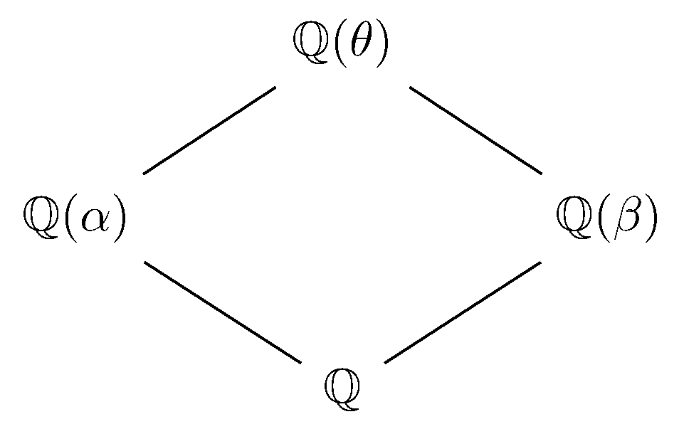

March 26th
Today I learned a small extension of Euclidean proofs of Dirichlet's theorem, from this paper . Say that a prime $p$ divides a polynomial $f\in\ZZ[x]$ if $p$ divides $f(k)$ for some $k\in\ZZ.$ The main theorem driving the discussion here is the following.
Theorem. For any two nonconstant polynomials $f,g\in\ZZ[x]$ share infinitely many prime divisors. In fact, they share a positive density of primes.
It suffices to take $f$ and $g$ irreducible by taking some irreducible factor. The idea is to relate prime divisors to prime-splitting via Dedekind-Kummer and then control factorization by going up to some large field. In particular, we can let $\theta$ be an algebraic integer generating the Galois closure of the splitting fields of $f$ and $g.$
We are guaranteed that infinitely many primes split completely in $\QQ(\theta),$ and their density is $1/[\QQ(\theta):\QQ].$ We showed this a while ago by analyzing the residue of $\zeta_K$ at $s=1,$ but there are also Euclidean proofs of this statement without the density via Dedekind-Kummer.
Anyways, the reason we care is that we claim all but finitely of the infinitely many primes $p$ which split completely in $\QQ(\theta)$ is a divisor of $f$ and $g.$ Let $\alpha$ and $\beta$ be some root of $f$ and $g$ respectively so that we have the following tower.

In particular, $p$ splits completely in both $\QQ(\alpha)$ and $\QQ(\beta).$ Now, by Dedekind-Kummer, the splitting behavior of $p$ corresponds to the factorization of $f$ and $g$ in $\FF_p[x],$ so for all but finitely many $p,$ we know $f$ and $g$ split completely into linear factors.
Thus, for all but finitely many of our $p,$ we know $f$ and $g$ have a root in $\FF_p,$ implying that $p$ is a prime divisor of both $f$ and $g.$ This finishes. $\blacksquare$
Now, this is interesting because it provides a bit of a comic perspective to the usual Euclidean proofs of Dirichlet's theorem for $1\pmod n$ primes, for fixed positive integer $n.$ Namely, typically a lot of effort is put into showing that, for integer $a$ and prime $p,$\[p\mid\Phi_n(a)\implies p\mid n\text{ or }p\equiv1\pmod n.\]This can be done quickly by looking at $\QQ(\zeta_n),$ for unramified $p\nmid n$ will give $\Phi_n$ a linear factor if and only if $p$ splits completely in $\QQ(\zeta_n)$ if and only if $p\equiv1\pmod n.$ Alternatively, one can show more manually that the multiplicative order of $a\pmod p$ is $n,$ implying $p\equiv1\pmod n.$
This is nice because then the polynomial $\Phi_n(nx)\in\ZZ[x]$ satisfies the property that, for some integer $a$ and prime $p,$\[p\mid\Phi_n(na)\implies p\equiv1\pmod n.\]This can be used to show that there are infinitely many $1\pmod n$ primes in the usual way, for nonconstant polynomials have infinitely many prime divisors (use Dedekind-Kummer, or even directly apply the theorem with $g(x)=x$).
However, once we have constructed $\Phi_n(nx)$ with only $1\pmod n$ prime divisors, the theorem gives the following.
Proposition. Fix a positive integer $n.$ Then any nonconstant polynomial $f\in\ZZ[x]$ has infinitely many $1\pmod n$ prime divisors.
This is proven by using the theorem with our $f$ and $g(x):=\Phi_n(nx).$ Any of the infinitely many shared prime divisors will surely divide $f$ and be $1\pmod n.$ $\blacksquare$
So in fact, any old polynomial could be used to witness a Euclidean proof of Dirichlet's theorem for $1\pmod n$ primes! However, I am not aware of any proof of this fact which does not go through all this machinery, so our discussion of cyclotomics is probably still necessary exposition.
Also, this suggests a difficulty to extending Euclidean proofs of Dirichlet's theorem for general $k\pmod n$ with $\gcd(k,n)=1.$ Namely, if we wanted to continue the polynomial approach, all of the polynomials we use will have (infinitely many) $1\pmod n$ prime factors, so we literally cannot always construct some $f\in\ZZ[x]$ such that\[p\mid f(a)\implies p\equiv k\pmod n,\]where $a$ is an integer and $p$ is prime. I know it is possible to work around this somewhat (though I haven't gone through the full argument), but it some sense to me why we probably can't go all the way to Dirichlet's theorem.